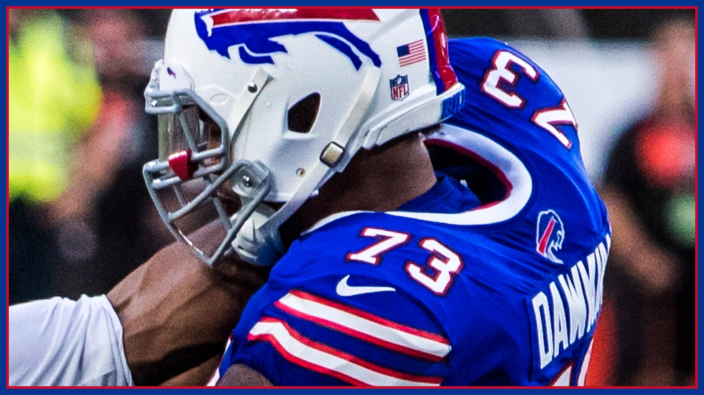

Carson Wentz will start Monday night. Buffalo's bigger problem is its own offensive line.
Minnesota ruled Kyler Murray out Thursday and named Carson Wentz the starter for Monday night. Buffalo's first practice report was the scarier document: Dion Dawkins (rib) and Alec Anderson (ankle) did not practice and Spencer Brown (back) was limited — both tackles and a guard, three days before Brian Flores' No. 1 defense.

Thursday was supposed to simplify Monday night. It did — for Minnesota. Vikings head coach Kevin O'Connell announced Thursday that Kyler Murray is out with a hamstring strain and Carson Wentz will start against Buffalo at U.S. Bank Stadium (Monday, 8:15 PM ET, ESPN), with Max Brosmer backing him up. One sideline got its answer three days early. The other sideline opened its first practice report of the week and found a different kind of problem: 18 players listed, per Bills on SI's count — and the top of the list is Buffalo's offensive line, three days before it meets the No. 1 defense in football.
Start with the quarterback change, because it is real news and not a smokescreen. Per Reuters, Murray is considered week-to-week after imaging confirmed the hamstring strain he suffered late in Sunday's 19-15 loss in Detroit, and O'Connell said the team does not expect him to land on injured reserve. In his place: Wentz, 33, making his 101st career start and his second of this season. His 2026 line in two appearances, per Reuters, is 23 of 39 for 276 yards with three touchdowns and no interceptions — he relieved Murray in the Sept. 13 opener and helped beat Green Bay 39-22, then started the 9-3 win at Chicago the following week. Minnesota is apparently not done shopping, either: per James Palmer of NFL on Prime, the Vikings have been working the phones about quarterback depth ahead of Tuesday's trade deadline and have not ruled out adding to the room. None of that changes Monday. Monday is Wentz.
For Jim Leonhard, that changes the test — it does not erase it. Murray's threat was his legs and the chaos that follows them; Wentz is a pocket passer who, per Athlon's breakdown, was sacked six times in his limited duty this season and does not have Murray's escape hatch. If the aggressive, booth-called defense Buffalo unveiled against Baltimore — 61.3% blitz, season-high man coverage, per Buffalo Rumblings' charting — was ever going to get a second audition, a stationary target in prime time is the invitation. But do not write Wentz off as a relief pitcher. He has thrown for 23,902 yards and 162 touchdowns across 100 career starts, per Reuters, he is 2-0 in the games he has played this season, and there is one uncomfortable fit for Buffalo: the thing Minnesota's offense has failed to do for two months is get Justin Jefferson the ball accurately — Athlon counted four inaccurate Murray overthrows on Jefferson's nine targets in Detroit — and a veteran pocket passer feeding his best receiver on time is exactly how a 'frustrated superstar' story, the one this site's Culture Desk told yesterday, stops being a slump. Christian Benford's rematch with Jefferson just got a different quarterback throwing the ball.
Now the part of Thursday that should actually worry Bills fans, because it is Buffalo's. Per the Bills' first official report of the week, reported by NBC Sports and the Democrat and Chronicle: left tackle Dion Dawkins did not practice with a rib injury — a new name, and Josh Allen's blind-side protector. Left guard Alec Anderson did not practice with an ankle injury; Bills reporter Jon Scott noted Anderson was wearing a boot after Sunday's game, per Heavy. And right tackle Spencer Brown was limited with the back injury that already cost him the Ravens game, when Tylan Grable started in his place, per Bills on SI. That is both starting tackles and a starting guard on the same report, in the same week, against Brian Flores — whose defense, as this site's Film Room detailed Wednesday, has blitzed at a 69.9% rate this season, per TSN, a number no team has approached since ESPN Research began tracking pass rushes in 2006. Buffalo's offense is the story of this season. Thursday, its foundation was the injury report.
The rest of the report cuts both ways, and the honest version includes the good column. Did not practice: wide receiver Joshua Palmer (hamstring — Bills on SI reports he is expected to miss multiple weeks), defensive tackle Greg Gaines (calf) and running back Ty Johnson (illness, which Buffalo Rumblings expects to clear quickly). Limited: Brown, DJ Moore (shoulder), Keon Coleman (shoulder), Dalton Kincaid (chest) and defensive back Jordan Hancock (hamstring, in his return-from-IR window), per NBC Sports. Full practice — and this matters — slot corner Dee Alford, back at full strength after missing two weeks, per Buffalo Rumblings, plus Ed Oliver, Bradley Chubb, TJ Parker, Ar'maj Reed-Adams and T.J. Sanders. And Tyrell Shavers practiced fully in his PUP window; Buffalo has until Nov. 19 to activate him, per Rumblings. A Thursday report for a Monday game is a weather vane, not a verdict: final game designations arrive Saturday, and Monday's inactives, about 90 minutes before kickoff, are the last word. This desk will not print a practice report as a lineup.
But understand what rides on Friday's and Saturday's updates, because the stakes are not abstract. Per the Associated Press preview carried by TSN, Buffalo has hit 30 points in three straight games and five of seven, has scored on 43 of its 70 drives that did not end in a kneel-down, and Monday is the first time since 2013 that a team averaging 33 or more points has played a team allowing 14 or fewer this late in a season. James Cook enters with 707 rushing yards, fifth in the league, per the same preview — and every one of those numbers runs behind the five men Thursday's report just put in question. Buffalo is a 3.5-point road favorite, per the AP's need-to-know, and that price assumes something close to a whole offensive line. If Dawkins returns to practice Friday and Brown stacks a second limited day, this becomes a footnote. If the DNP column holds, Monday night stops being No. 1 offense versus No. 1 defense and becomes a survival drill — Allen improvising behind backups against the most aggressive defense in football.
So the weekend watch is simple, and it is not in Minneapolis. It is the left side of Buffalo's practice report. Minnesota answered its biggest question on Thursday; Buffalo's biggest question — who protects Josh Allen on Monday night — does not get answered until the weekend, and Flores gets a vote either way. Go Bills — and get every injury update and the full Monday night fallout in your inbox every morning with The BNC Blitz.
The BNC Blitz is free: the day's Bills news, one stat that matters, and one take, every morning. Join to keep reading — and never miss the end of a story again.